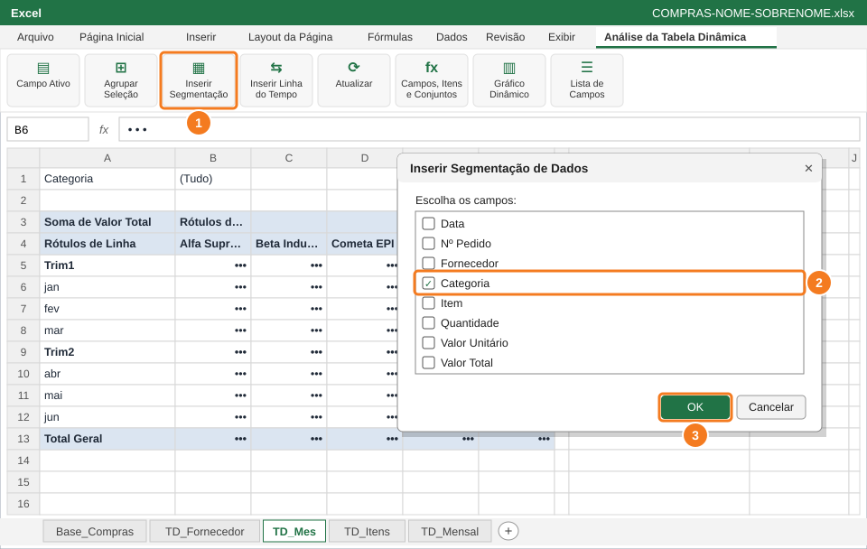
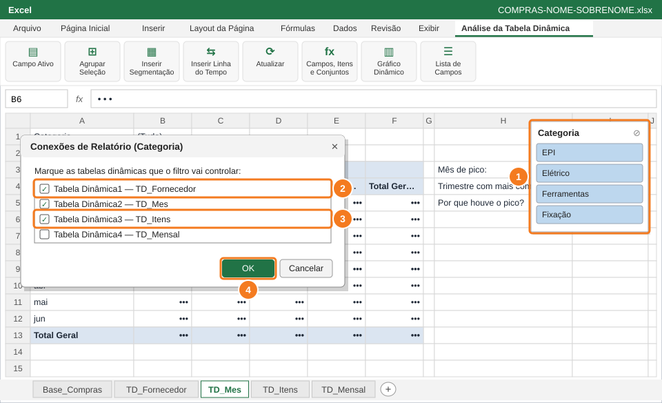
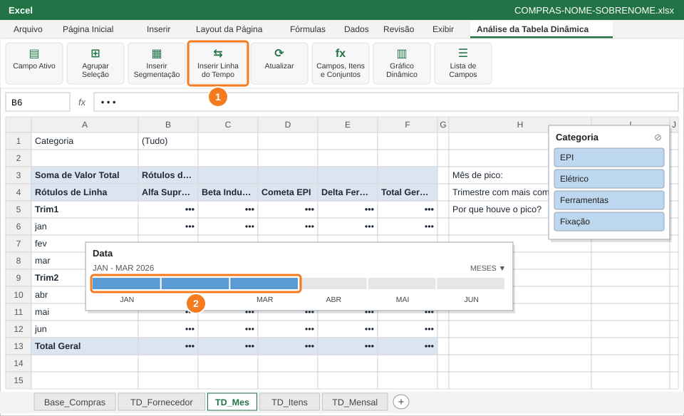
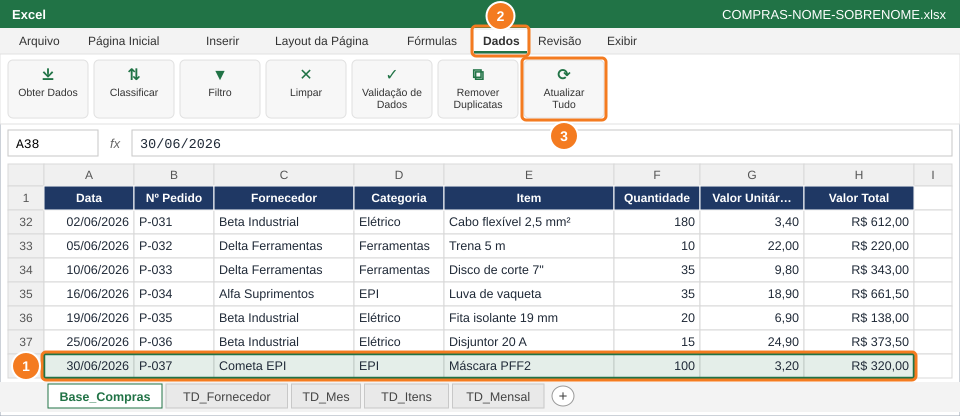
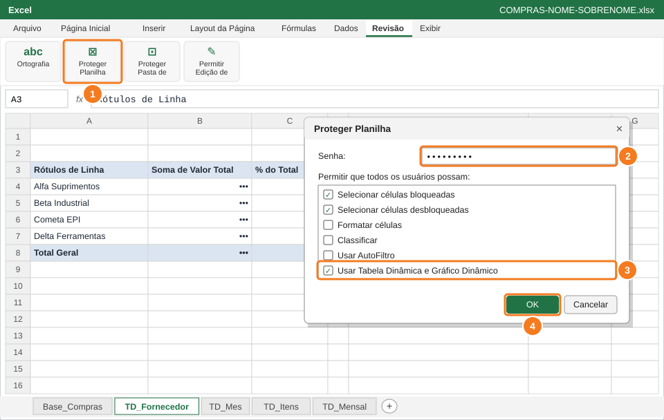

Deixar o relatório interativo com segmentação e linha do tempo, atualizar a análise com uma compra nova e proteger a base e o relatório antes de entregar.
Você vai usar
Inserir Segmentação de Dados
Conexões de Relatório
Inserir Linha do Tempo
Dados → Atualizar Tudo
Proteger Planilha com "Usar Tabela Dinâmica e Gráfico Dinâmico"
Aba de trabalho:TD_Mes, Base_Compras e TD_Fornecedor · Slides de apoio: Arquivo 6 — slides 20, 33–34, 36 e 36.1
1
Insira a segmentação de Categoria

Inserir Segmentação de Dados (1) → marque Categoria (2) → OK (3).
Na aba TD_Mes, clique na tabela dinâmica.
Guia Análise da Tabela Dinâmica → Inserir Segmentação de Dados (1).
Marque Categoria (2) → OK (3). Aparece uma caixa com um botão para cada categoria.
🐧 No LibreOffice CalcO Calc não tem segmentação. Use o filtro da tabela dinâmica (Categoria na área de filtros) para o mesmo resultado.
2
Ligue a segmentação às outras tabelas dinâmicas

Botão direito na segmentação (1) → Conexões de Relatório: marque as tabelas (2) (3) → OK (4).
Clique com o botão direito na caixa da segmentação (1) → Conexões de Relatório.
Marque as tabelas dinâmicas das abas TD_Fornecedor (2), TD_Mes e TD_Itens (3). O nome da aba aparece ao lado do nome da tabela.
Clique em OK (4). Agora um clique na segmentação filtra as três tabelas de uma vez.
💡 DicaOs números das tabelas (Tabela Dinâmica1, 2, 3...) podem ser outros no seu arquivo: guie-se pelo nome da aba.
3
Filtre o período com a linha do tempo

Inserir Linha do Tempo (1) → arraste a barra para selecionar jan a mar (2).
Com a TD_Mes selecionada: Análise da Tabela Dinâmica → Inserir Linha do Tempo (1) → marque Data → OK.
Na linha do tempo, clique em JAN e arraste até MAR (2): a tabela mostra só o 1º trimestre.
Depois clique no ícone de limpar filtro da linha do tempo para voltar ao semestre inteiro.
💡 DicaTroque MESES por TRIMESTRES no canto da linha do tempo para escolher períodos maiores com um clique.
4
Lance uma compra nova e atualize tudo

Digite a compra na linha 38 (1) → Dados (2) → Atualizar Tudo (3).
Na Base_Compras, na primeira linha vazia logo abaixo da última compra (linha 38), digite a compra nova (1): 30/06/2026, P-037, Cometa EPI, EPI, Máscara PFF2, 100, 3,20. O Valor Total é calculado sozinho.
Guia Dados (2) → Atualizar Tudo (3), ou Ctrl+Alt+F5.
Volte às tabelas dinâmicas e veja os totais de junho e da Cometa EPI mudarem.
⚠️ AtençãoTabela dinâmica não atualiza sozinha quando a base muda: sem o Atualizar, os números ficam velhos.
✅ VerifiqueNa TD_Mes, a contagem de pedidos de junho aumentou em 1.
5
Proteja a base e o relatório

Proteger Planilha (1), senha (2), permitir Usar Tabela Dinâmica e Gráfico Dinâmico (3) e OK (4).
Na Base_Compras: Revisão → Proteger Planilha → senha senai2026 → OK → confirme a senha. Ninguém mais altera as compras por engano.